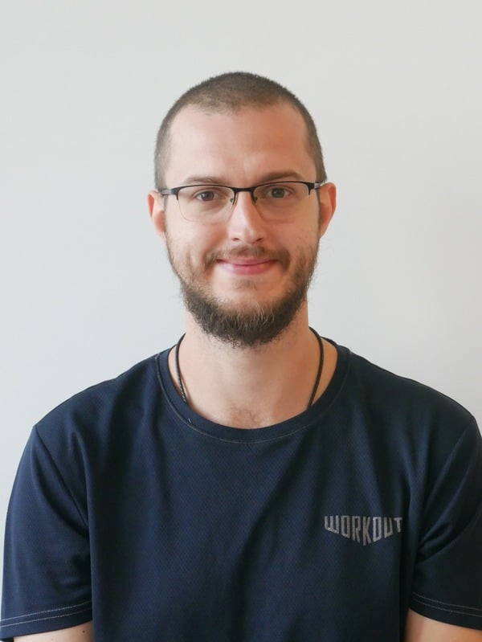
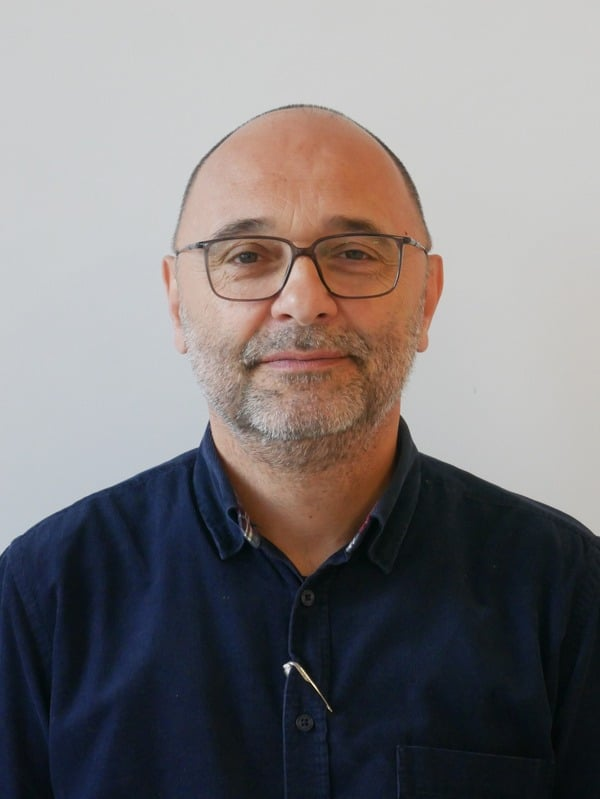
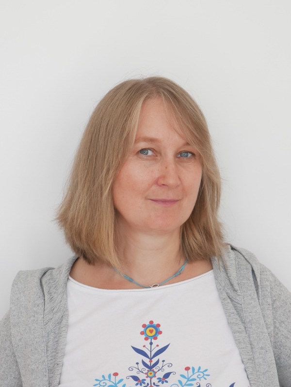
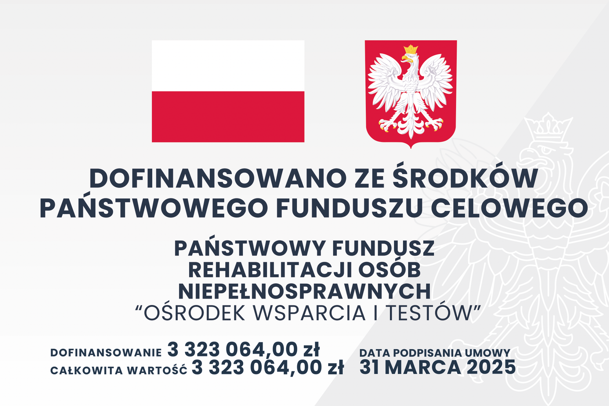

Doradztwo technologiczne
Konsultacje w zakresie doboru technologii wspomagających do indywidualnych potrzeb użytkownika.
Wspieramy osoby z niepełnosprawnościami poprzez doradztwo, testowanie i wypożyczanie nowoczesnych technologii asystujących.
Jak zacząć?
Zadzwoń lub napisz
Umów bezpłatną konsultację
Konsultacja ze specjalistą
Omówienie potrzeb i możliwości
Testuj sprzęt
Wypróbuj technologie asystujące
Wypożycz sprzęt
Sprzęt gotowy do użycia w domu
Ośrodek Wsparcia i Testów przy Zespole Szkół Nr 26 w Toruniu wspiera osoby z niepełnosprawnościami. Specjaliści doradzają w zakresie nowoczesnych technologii asystujących i pomagają w ich wdrażaniu.
Oferujemy możliwość testowania urządzeń wspierających komunikację, naukę, pracę i samodzielność. Kompleksowe wsparcie dla dzieci, dorosłych i seniorów z różnymi rodzajami niepełnosprawności.
Bezpłatna wypożyczalnia nowoczesnych urządzeń asystujących dostępna dla osób z niepełnosprawnościami i ich opiekunów. Przetestuj sprzęt zanim podejmiesz decyzję zakupową.
Kompleksowe wsparcie w zakresie technologii wspomagających – od pierwszej konsultacji po wdrożenie i szkolenie.
Konsultacje w zakresie doboru technologii wspomagających do indywidualnych potrzeb użytkownika.
Możliwość przetestowania szerokiej gamy urządzeń asystujących przed podjęciem decyzji zakupowej.
Bezpłatne wypożyczanie nowoczesnego sprzętu asystującego dla osób z niepełnosprawnościami i ich rodzin.
Praktyczny instruktaż obsługi technologii asystujących dla użytkowników, rodzin i opiekunów.
Przeglądaj nasz pełny katalog urządzeń asystujących. Sprzęt podzielony jest na cztery działy według rodzaju niepełnosprawności.
Laptopy, tablety, komunikatory, zegarki
Notatniki Braille'a, terminale, lupy, smartfony
Słuchawki, mikrofony, pętle indukcyjne, odbiorniki
Pionizatory, przystawki do wózków, podnośniki
Specjaliści z wieloletnim doświadczeniem w pracy z osobami z niepełnosprawnościami i technologiami asystującymi.
Oligofrenopedagog
Wykorzystuję nowoczesne technologie i AAC w pracy z osobami z niepełnosprawnością intelektualną i w spektrum autyzmu.

Oligofrenopedagog · Kognitywista
Łączę nowoczesne technologie asystujące z komunikacją alternatywną i wspomagającą (AAC) we wsparciu osób z niepełnosprawnością.

Pedagog specjalny
Specjalizuję się w rehabilitacji zawodowej i wsparciu osób z niepełnosprawnością intelektualną na otwartym rynku pracy.
Fizjoterapeuta · Oligofrenopedagog
Doświadczenie w pracy z dziećmi, dorosłymi i osobami z niepełnosprawnościami sprzężonymi.
Oligofrenopedagog · Arteterapeutka
Doświadczenie w pracy z niepełnosprawnościami intelektualnymi i sprzężonymi. Arteterapia jako narzędzie wsparcia.

Oligofrenopedagog
Wykorzystuję technologie wspomagające komunikację i rozwój poznawczy w pracy z dziećmi z niepełnosprawnością intelektualną.
Oligofrenopedagog · Logopeda
Terapeuta wczesnego wspomagania. Specjalista AAC i technologii wspierających komunikację w Punkcie Konsultacyjnym.
Zebraliśmy odpowiedzi na 18 najczęściej zadawanych pytań — o usługi, wypożyczanie, sprzęt i wizyty.
Dokumenty, formularze i materiały informacyjne — pobierz lub otwórz bezpośrednio w przeglądarce.
Pełny regulamin zasad i warunków korzystania z wypożyczalni sprzętu asystującego.
Pobierz PDF(otwiera się w nowej zakładce)
Dla osoby z niepełnosprawnością — formularz wniosku do wypełnienia przed wizytą.
Pobierz PDF(otwiera się w nowej zakładce)
Dla opiekuna / pełnomocnika — formularz wniosku składanego w imieniu osoby z niepełnosprawnością.
Pobierz PDF(otwiera się w nowej zakładce)
Upoważnienie do działania w imieniu osoby z niepełnosprawnością przy wypożyczeniu sprzętu.
Pobierz PDF(otwiera się w nowej zakładce)
Klauzula informacyjna RODO dla klientów i wypożyczających sprzęt asystujący.
Pobierz PDF(otwiera się w nowej zakładce)
Pełny katalog dostępnego sprzętu asystującego.
Pobierz PDF(otwiera się w nowej zakładce)
Jesteśmy do Twojej dyspozycji. Zapraszamy do kontaktu telefonicznego, mailowego lub osobistego.
Telefon
+48 697 677 027
Śledź nas
Fanpage Facebook (otwiera w nowej karcie)
Aktualności, porady, events
Godziny otwarcia
Dostępność tel./mail: Pn, Śr, Czw, Pt 7:30–15:30 · Wt 10:00–18:00

Tablica informacyjna projektu – plik dofinansowanie.png
Ułatwienia dostępu
Rozmiar tekstu
Domyślny (16px)